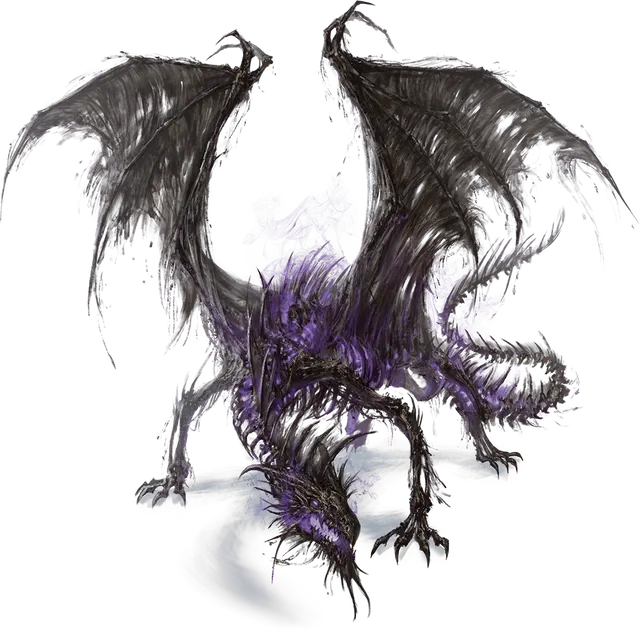

Малый дракон смерти
Lesser Death Dragon
Большая Нежить, хаотично-злая

Класс Доспеха 15 (природный доспех)
Хиты 199 (21к10 + 84)
Скорость 40 футов, летая 80 футов
| мод | спас | ||
|---|---|---|---|
| СИЛ | 20 | +5 | +5 |
| ЛОВ | 10 | +0 | +4 |
| ТЕЛ | 18 | +4 | +4 |
| мод | спас | ||
|---|---|---|---|
| ИНТ | 5 | −3 | −3 |
| МДР | 10 | +0 | +4 |
| ХАР | 5 | −3 | −3 |
Навыки Восприятие +4, Скрытность +4
Сопротивление урону колющий
Иммунитет к урону некротическая энергия, яд
Иммунитет к состояниям истощение, отравление
Языки Общий, Драконий (но не может говорить)
Опасность 10 (5900 опыта)
Бонус мастерства +4
Особенности
Необычная природа. Дракон не нуждается в воздухе, еде, питье и сне.
Действия
Мультиатака. Дракон совершает одну атаку Укусом и две атаки Когтём.
Укус. . Рукопашная атака оружием: +9 к попаданию, досягаемость 10 фт., одна цель. Попадание: 14 (2к8 + 5) колющего урона плюс 4 (1к8) урона некротической энергией.
Коготь. . Рукопашная атака оружием: +9 к попаданию, досягаемость 5 фт., одна цель. Попадание: 8 (1к6 + 5) рубящего урона. Если цель — Среднего или меньшего размера, она становится схваченной (Сл высвобождения 15). Пока цель схвачена, она опутана. У дракона есть два когтя, каждый их которых может схватить одну цель.
Дыхание Катаклизма (перезарядка 5-6). Дракон выдыхает волну призрачного фиолетового огня 30-футовым конусом. Все существа в этой области должны совершить спасбросок Ловкости Сл 16, получая 36 (8к8) урона некротической энергией при провале или половину этого урона при успехе. Цель умирает, если дыхание уменьшает её хиты до 0. Помимо этого, любой гуманоид Среднего размера или меньше, убитый уроном от дыхания, и все трупы подобных существ внутри конуса, становятся зомби [zombie] под контролем дракона. Зомби действует с такой же инициативой как у дракона, но сразу после его хода. При отсутствии других команд зомби пытается убить любое существо, не являющееся Нежитью, с которыми он сталкивается.
Описание
Большинство драконов смерти — бледные подобия себя прежних. В их памяти возникают проблески и отголоски, а иногда предметы или существа, с которыми они сталкиваются, вызывают болезненные воспоминания о том, что они когда-то пережили. Эти мимолетные мгновения просветления быстро сгорают в ярости и тоске, заставляя драконов уничтожить то, что вызывало эти воспоминания.
Драконы смерти
Драконы смерти — это нежить, останки скелетов металлических или цветных драконов, наделённые незатухающим огнём Катаклизма с помощью нечистой магии. В редких случаях драконы смерти появляются, когда душа погибающего дракона испытывает муки и сгорает в жажде мести. В независимости от происхождения Дракон смерти сохраняет отголосок своей прежней личности. Чем сильнее дракон смерти, тем больше ему приходится борться с поглощающей его ненавистью, чтобы сохранить хоть какие-то остатки воспоминаний.
Кости дракона смерти горят фиолетовым огнём Катаклизма, который он может выпустить в ужасающей имитации дыхания, которым обладал при жизни. Дыхание уничтожает жизненную силу и превращает тела, с которыми соприкасается, в нежить. Зомби рождённые в огне Катаклизма повинуются воле дракона смерти. Обычно они впадают в ярость и уничтожают всё живое на своем пути.